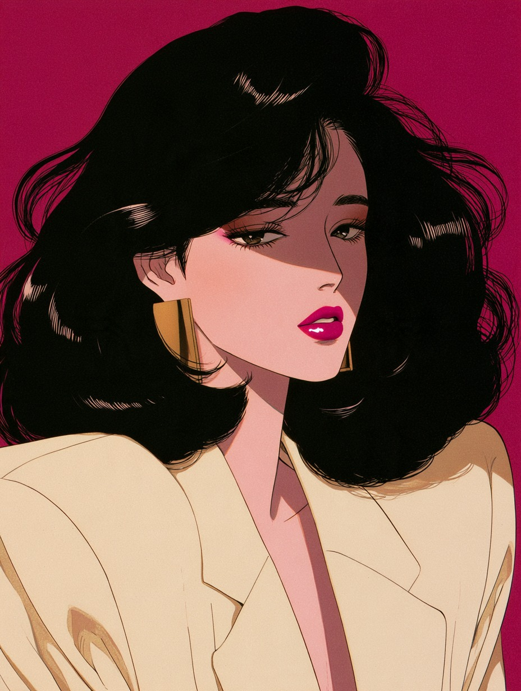
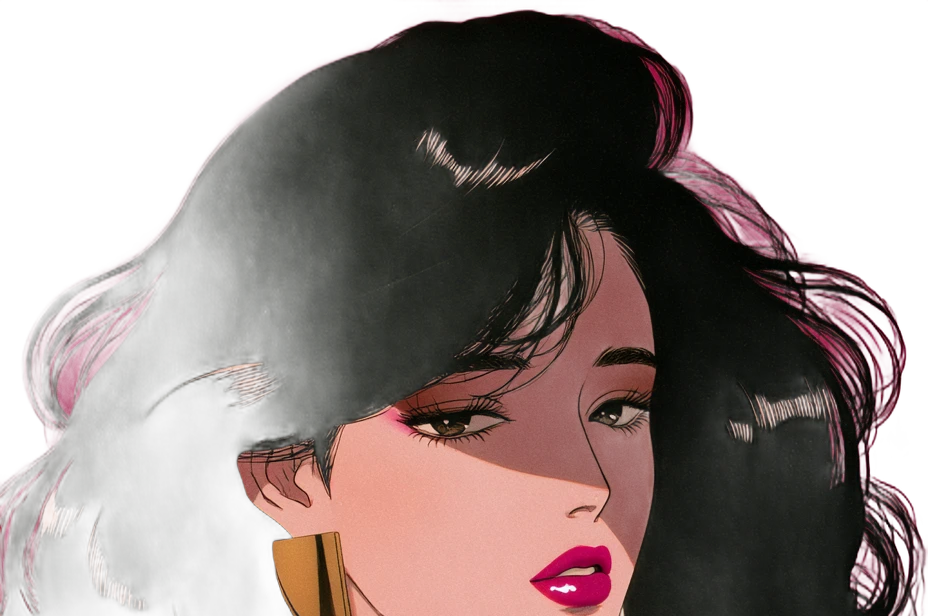
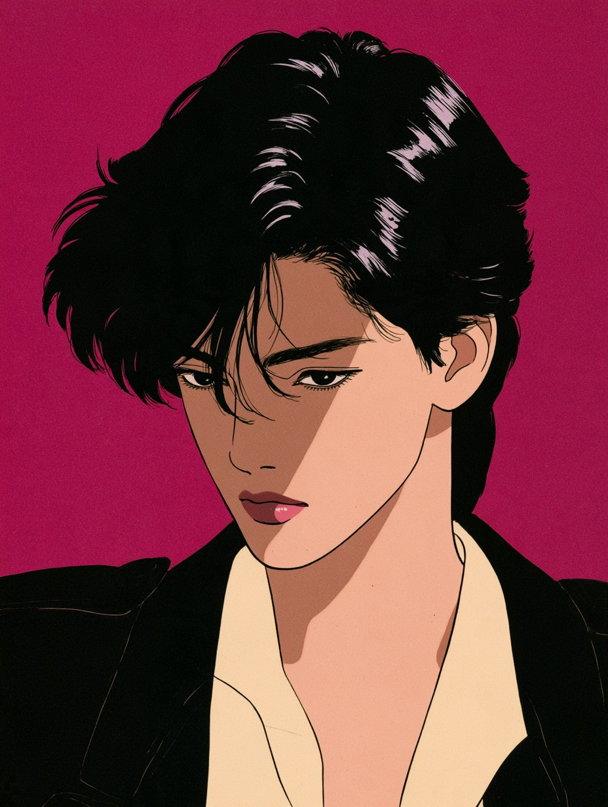
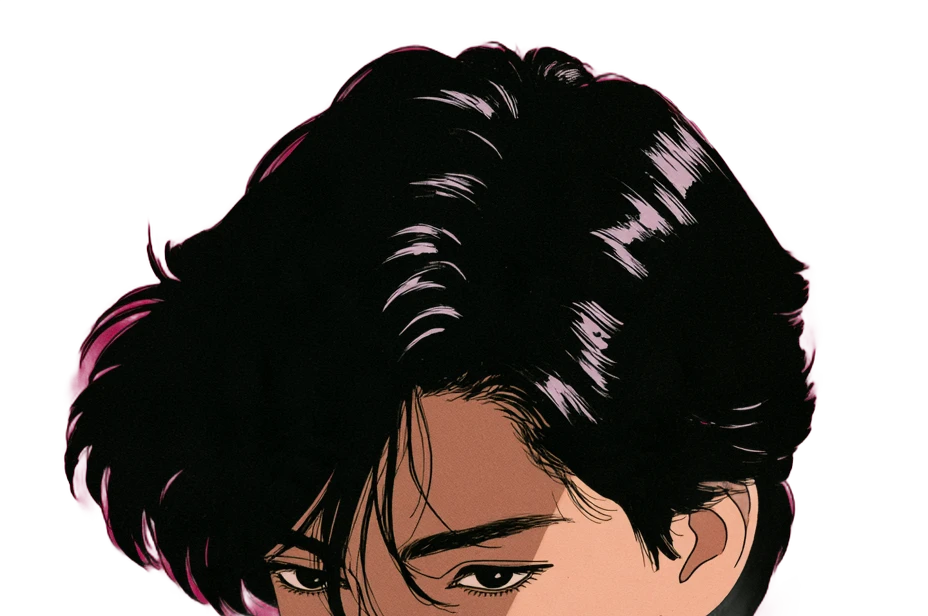
Contents
No trip this time,서울
이번 호는 출장을 가지 않았다. 1925년의 파리, 1934년의 할리우드, 1948년의 뉴욕, 1953년의 로마. 네 번을 떠났다 돌아온 편집부가 이번에는 자기 책상을 찍었다.
1985년의 서울은 바쁘다. 여름에는 여의도에 금빛 빌딩이 섰고, 가을에는 지하철 두 노선이 한꺼번에 뚫렸다. 거리의 어깨는 해마다 넓어진다.
앞쪽은 마감 날의 편집부다. 라이트박스에서 시작해 분장실을 거쳐 새벽 택시에서 끝난다. 그 뒤로 편집부가 매일 지나다니는 도시와 쉬는 날, 비 오는 밤이 이어진다.
잡지는 먼 곳을 찍지만,
만들어지는 곳은 늘 여기다.
— ÉPOQUE 편집부, 1985년 서울
네 장면 — 라이트박스에서 새벽 택시까지
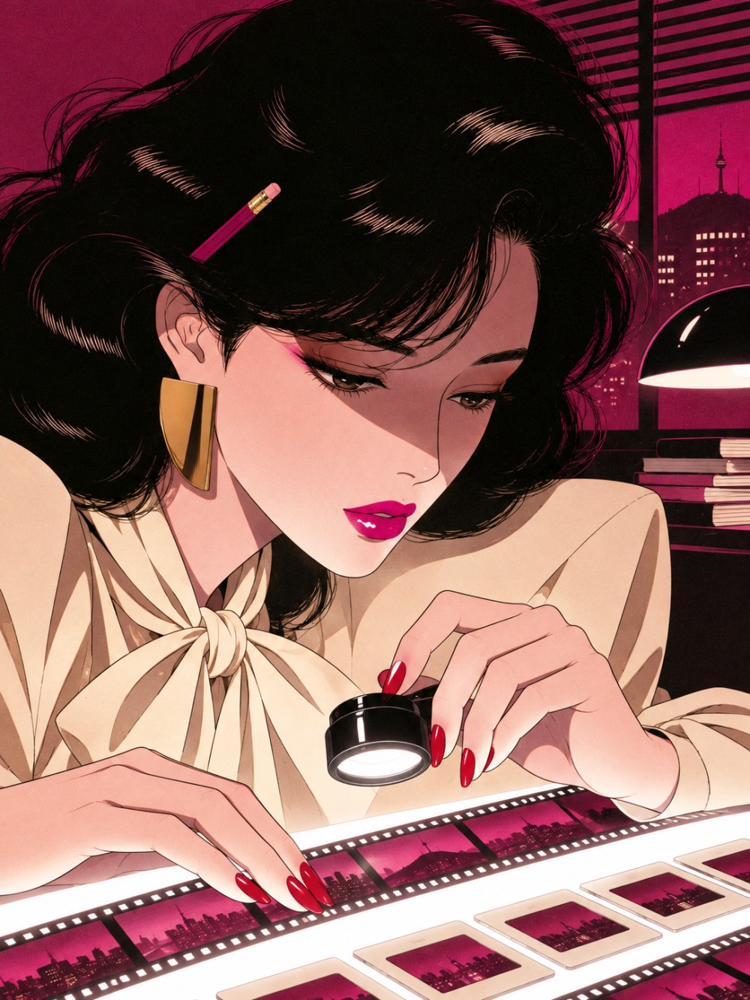
스물네 컷 중 한 컷
마감 날 아침, 편집실에서 가장 밝은 곳은 라이트박스다. 현상소에서 막 돌아온 슬라이드 필름을 유리판 위에 늘어놓고 루페를 대면, 손톱만 한 화면 안에 지난주의 촬영이 다시 켜진다.
머리에 꽂은 연필은 고른 컷에 표시를 하는 데 쓴다. 블라우스는 목에서 크게 리본을 묶는 실크. 1980년대 일하는 여자의 옷장에서 넓은 어깨의 재킷과 짝을 이루던 옷이다.
- BLOUSE
- 목에 리본을 묶는 크림 실크 블라우스
- EARRING
- 기하학적인 금 귀걸이 한 짝
- NAILS
- 윤이 나는 레드
- TOOLS
- 루페, 슬라이드 마운트, 연필
귀걸이를 벗어 둔 자리
밤 열 시의 책상. 사진이 들어갈 자리를 네모로 비워 둔 레이아웃 용지 위에 빨간 색연필이 놓여 있다. 고칠 곳에 표시를 하는 색이다.
다이얼 전화기 옆에는 식어 가는 커피, 시험 삼아 찍은 폴라로이드, 가위와 자. 수화기를 오래 들고 있으면 귀가 아파서, 귀걸이 한 짝은 벗어서 종이 위에 올려 두었다.
- ON THE DESK
- 레이아웃 용지, 빨간 색연필, 가위, 금속 자
- PHONE
- 검은 다이얼 전화기
- LEFT BEHIND
- 벗어 둔 금 귀걸이 한 짝, 립스틱이 묻은 종이컵
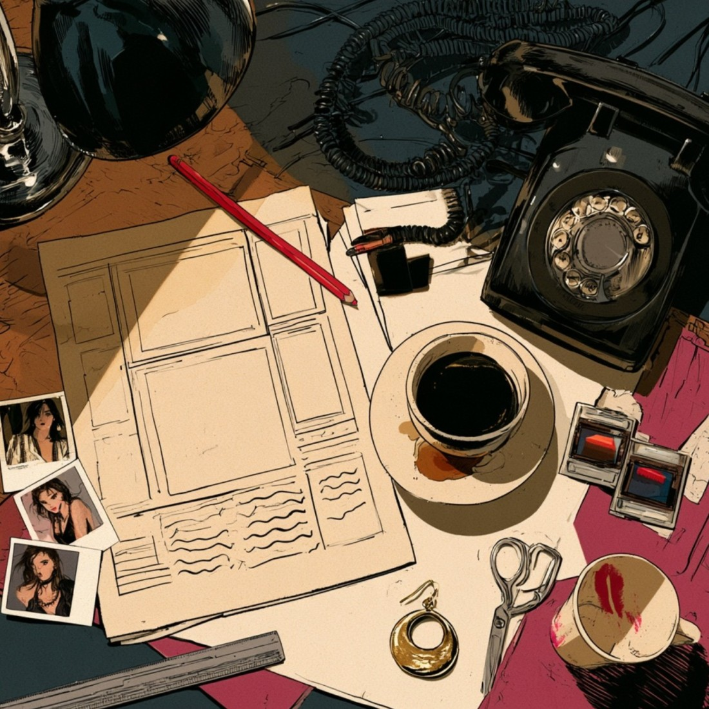
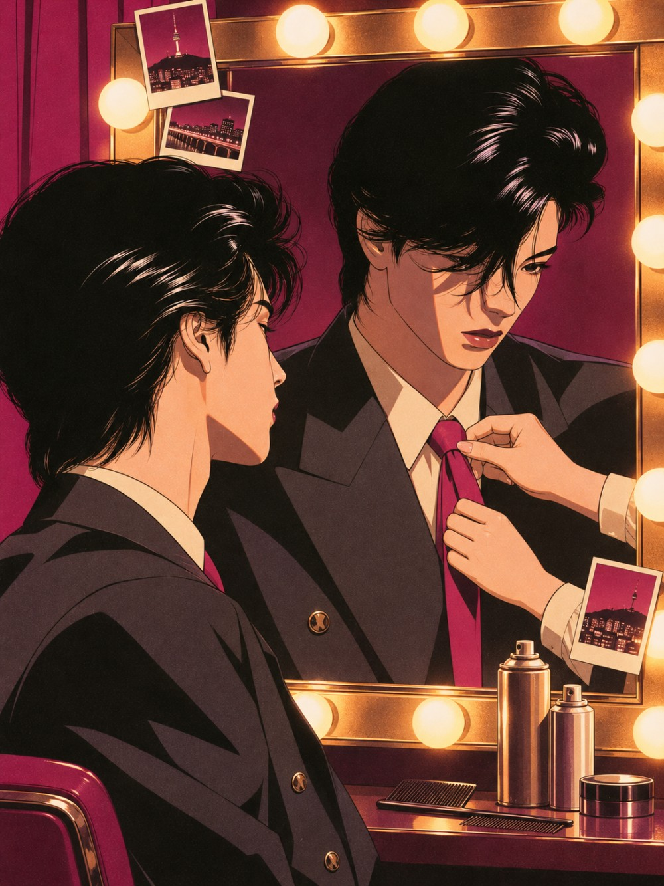
매듭은 스타일리스트의 일
촬영이 시작되기 5분 전. 화보에는 모델만 남지만, 그 직전까지 프레임 안에는 손이 더 있다. 타이 매듭을 조이고, 깃을 눌러 주고, 어깨의 먼지를 떼는 손.
어깨에 패드를 넣어 넓힌 더블 수트에 폭이 좁은 타이. 거울 틀에 꽂아 둔 폴라로이드는 조명과 옷을 미리 확인하려고 찍은 시험 컷이다.
- SUIT
- 넓은 어깨의 차콜 더블브레스트 수트
- TIE
- 폭이 좁은 마젠타 타이
- HAIR
- 젤로 넘겨 윤을 낸 머리
- ON THE COUNTER
- 헤어스프레이, 빗, 폴라로이드
교정지를 안고 집으로
마지막 교정지에 사인을 하고 나오면 새벽이다. 택시 창에 빗방울이 맺히고, 그 너머로 네온이 길게 번진다.
품에 안은 것은 둘둘 만 교정쇄. 인쇄소로 넘어가기 전 마지막으로 글자와 색을 확인한 종이다. 아침에 묶었던 머리는 풀렸고, 코트 깃은 세웠다.
- COAT
- 깃을 세운 크림색 와이드 숄더 코트
- EARRINGS
- 길게 떨어지는 크리스털 드롭 귀걸이
- LIPS
- 푸크시아 핑크
- IN HER ARMS
- 둘둘 만 교정쇄
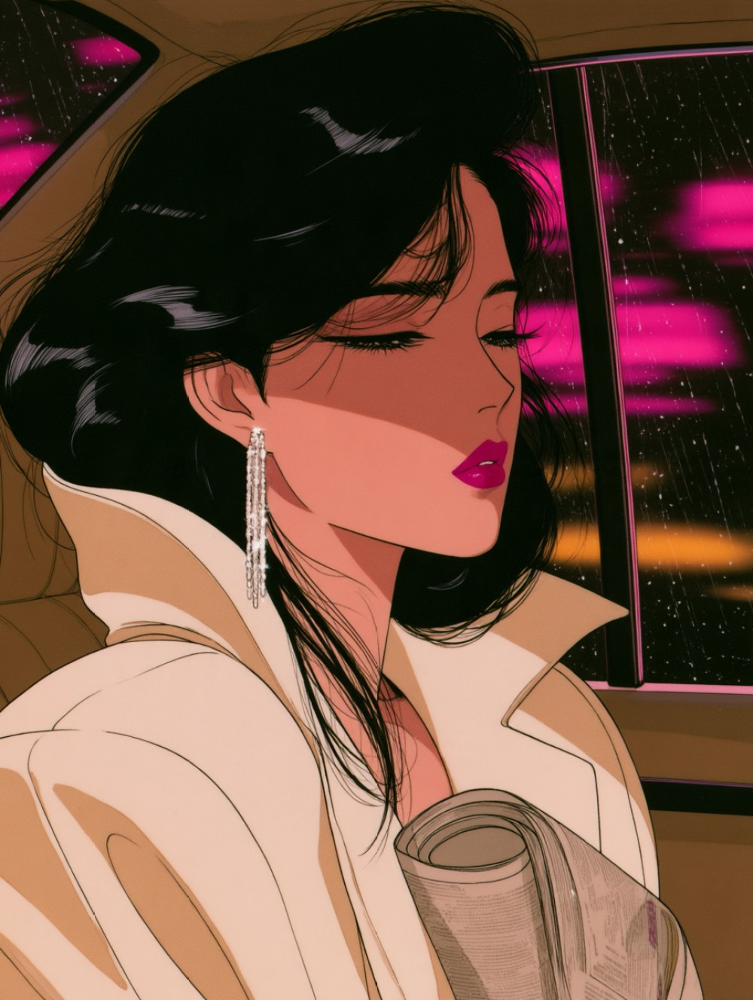
1985
이날 여의도 63빌딩이 전면 개장했다. 지상 60층에 지하 3층, 높이 249미터. 한강변에 선 금빛 유리 건물은 서울의 스카이라인을 바꿔 놓았다.
같은 해 가을에는 지하철 3호선과 4호선이 전 구간 개통했고, 겨울에는 압구정에 새 백화점이 문을 열었다. 도시는 강 남쪽으로 넓어지고 있었다.
그 무렵
서울에서는
- 1980.12컬러 TV 보급 시작, 옷과 광고에 색이 쏟아짐
- 1983교복 자율화, 청바지가 십대의 옷이 됨
- 1985.10.18지하철 3호선·4호선 전 구간 개통
- 1985.12.1현대백화점 압구정 본점 개점
여섯 장면 — 여의도에서 핸드백 속까지
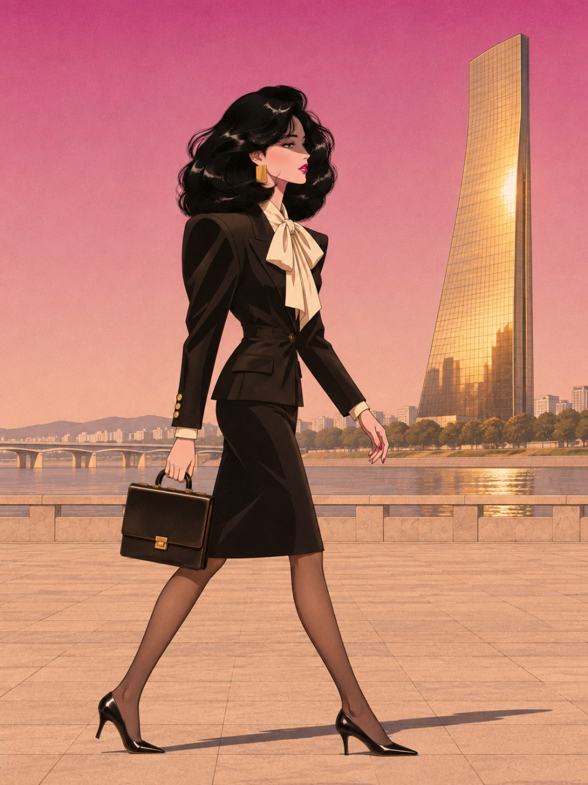
금빛 유리 앞의 출근길
1985년 7월 27일, 여의도에 63빌딩이 전면 개장했다. 지상 60층에 지하 3층, 높이 249미터. 금빛 유리로 덮인 이 건물은 그해 서울에서 가장 높은 곳이었다.
그 앞을 지나는 출근길의 옷은 스커트 수트다. 패드를 넣어 넓힌 어깨, 조인 허리, 무릎 길이의 좁은 치마. 안에는 리본 블라우스를 받쳐 입고, 서류 가방을 들었다.
- SUIT
- 넓은 어깨에 허리를 조인 블랙 스커트 수트
- BLOUSE
- 크림색 리본 블라우스
- LEGS · SHOES
- 비치는 검은 스타킹, 블랙 펌프스
- BAG
- 금장 잠금쇠의 가죽 서류 가방
명동, 어깨의 시대
양장점과 구두 가게의 쇼윈도가 이어지는 명동. 주말 오후면 서울에서 옷을 가장 잘 입은 사람들이 이 길을 걸었다.
어깨에 패드를 넣은 재킷은 소매를 팔꿈치까지 밀어 올려 입는다. 허리선이 높은 바지는 엉덩이에서 넉넉하다가 발목으로 갈수록 좁아진다. 목에는 마젠타 스카프, 손에는 체인 달린 누빔 백.
- JACKET
- 소매를 걷어 올린 크림색 와이드 숄더 재킷
- TROUSERS
- 발목으로 좁아지는 하이웨이스트 턱 팬츠, 넓은 벨트
- SCARF
- 목에 묶은 마젠타 실크 스카프
- BAG · SHOES
- 체인 스트랩 누빔 백, 블랙 펌프스
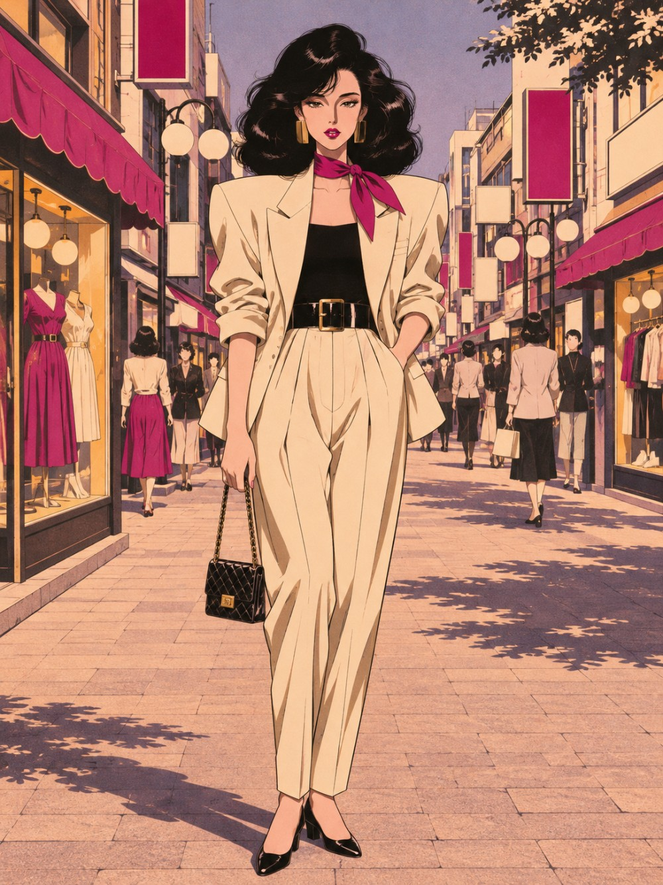
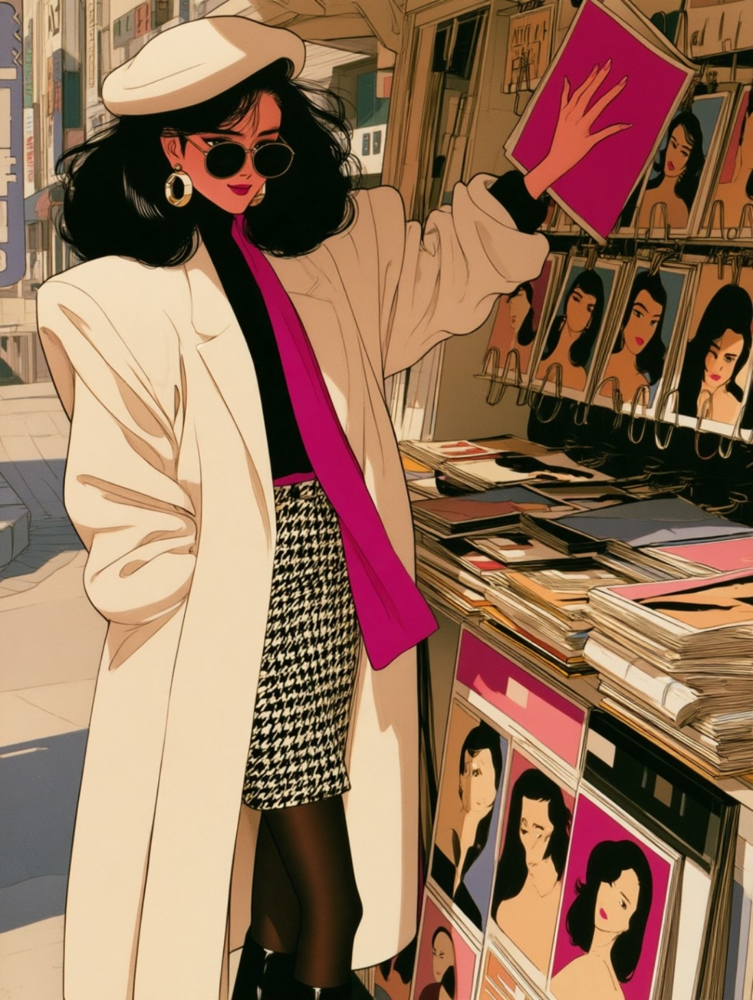
가판대에 꽂힌 날
밤새 인쇄된 잡지는 아침이면 가판대에 꽂힌다. 표지들 사이에서 마젠타색 한 권을 집어 든다.
어깨가 넓은 크림색 롱 코트는 단추를 잠그지 않고 걸쳤다. 안에는 검은 터틀넥과 하운드투스 체크의 좁은 치마. 베레모와 둥근 선글라스, 큼직한 금 귀걸이로 마무리했다.
- COAT
- 와이드 숄더 크림색 울 롱 코트
- SKIRT
- 블랙 앤 크림 하운드투스 펜슬 스커트, 검은 스타킹
- HAT · GLASSES
- 크림색 베레모, 둥근 선글라스
- SCARF · EARRINGS
- 마젠타 머플러, 큰 금 링 귀걸이
블라인드 사이의 오후
점심과 퇴근 사이, 다방 창가 자리는 회사 밖의 책상이다. 커피 한 잔을 시켜 놓고 신문을 펴면 한 시간은 아무도 찾지 않는다.
어깨에 패드를 넣은 회색 더블 수트에 가는 줄무늬 셔츠. 버건디 타이는 매듭을 반쯤 풀었다. 블라인드 사이로 들어온 오후 햇빛이 재킷 위에 줄을 긋는다.
- SUIT
- 넓은 어깨의 회색 더블브레스트 수트
- SHIRT
- 가는 줄무늬 셔츠
- TIE
- 느슨하게 푼 버건디 페이즐리 타이
- ON THE TABLE
- 커피, 접은 신문, 유리 재떨이
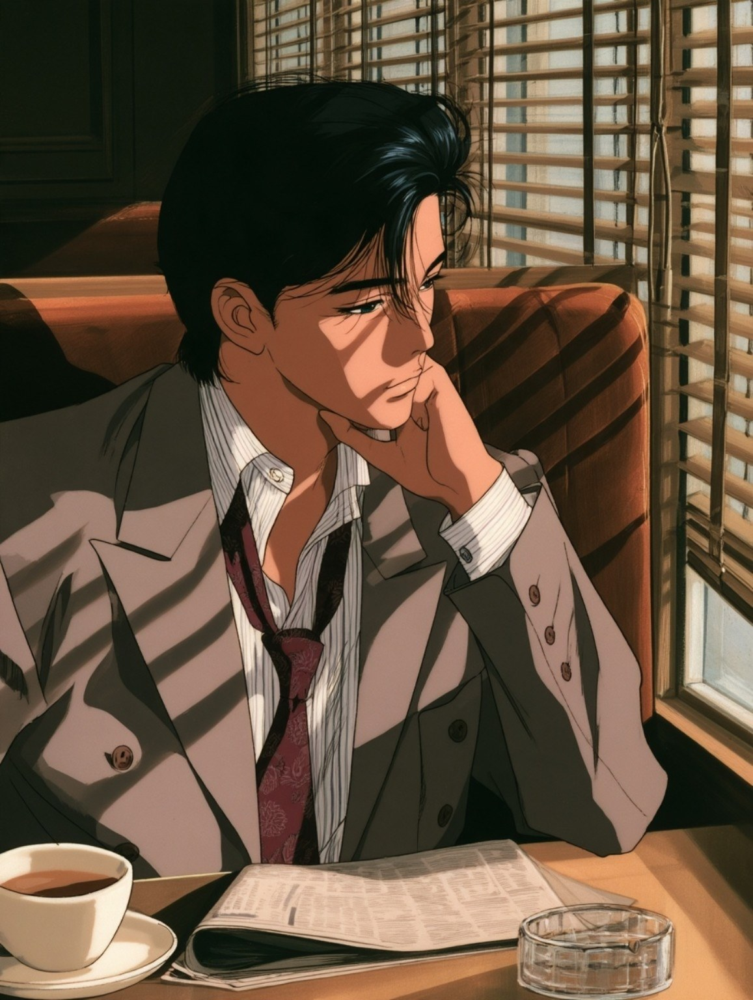
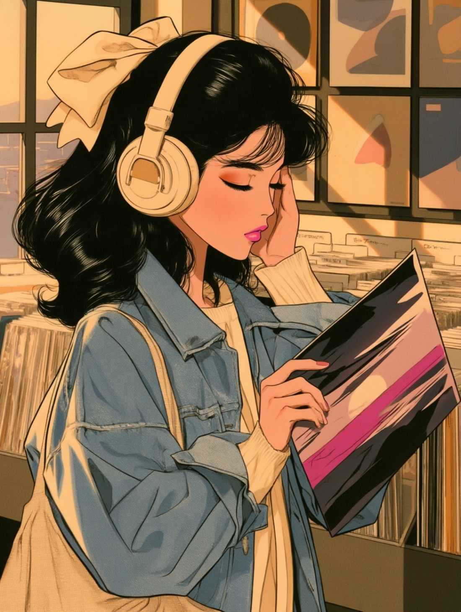
한 곡만 듣고 갈게요
레코드 가게의 청음대. 헤드폰을 쓰면 가게 안의 소리가 멀어지고, 판 한 면이 돌아가는 동안은 아무도 말을 걸지 않는다.
쉬는 날의 옷은 물 빠진 데님 재킷이다. 크림색 니트 위에 큼직하게 걸치고, 머리는 반만 묶어 큰 리본을 달았다.
- JACKET
- 큼직한 스톤워시 데님 재킷
- KNIT
- 크림색 니트
- HAIR
- 반묶음에 크림색 리본
- BAG
- 캔버스 숄더백
체인 백에서 나온 것들
가방을 뒤집으면 그 사람의 하루가 나온다. 립스틱, 선글라스, 수첩과 펜, 열쇠 꾸러미.
카세트테이프와 작은 헤드폰은 걸으면서 음악을 듣기 위한 것이다. 큼직한 금 귀걸이도 한 쌍 들어 있다. 어깨가 넓은 재킷에는 귀걸이도 커야 균형이 맞는다.
- BAG
- 체인 스트랩의 검은 누빔 백
- MAKEUP
- 금색 케이스의 립스틱, 향수
- MUSIC
- 카세트테이프, 작은 헤드폰
- JEWELRY
- 기하학적인 금 귀걸이 한 쌍
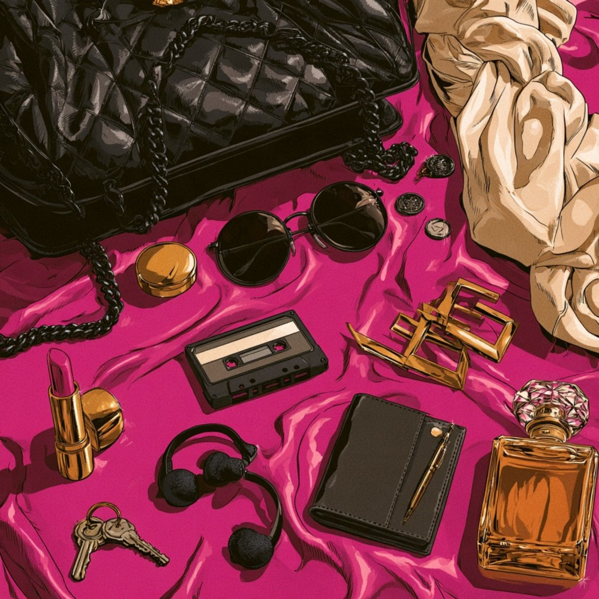
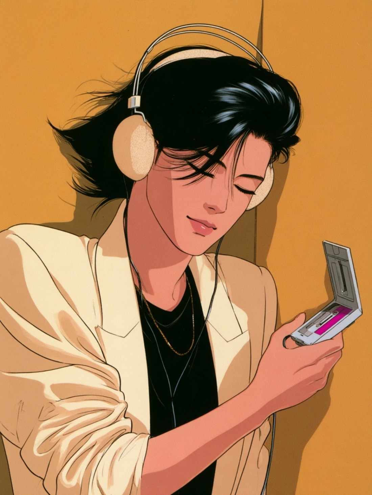
걸으면서 듣는다.
주머니에 들어가는 스테레오.
세 장면 — 에어로빅 스튜디오에서 롤러스케이트장까지
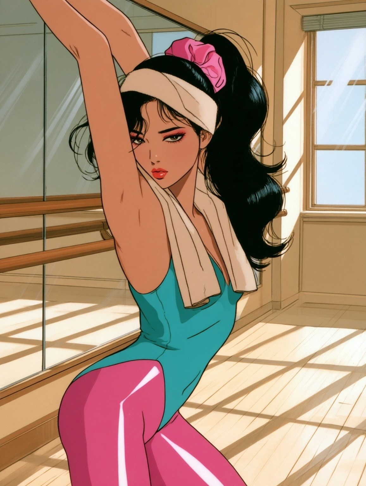
쉬는 날의 첫 한 시간
쉬는 날 아침은 스튜디오에서 시작한다. 음악에 맞춰 뛰기 전에 먼저 팔을 길게 뻗어 몸을 푼다.
몸에 붙는 레오타드에 윤이 나는 타이츠를 겹쳐 입는다. 색은 청록과 분홍처럼 서로 부딪치는 것끼리 고른다. 머리는 높이 올려 묶고, 이마에는 타월 천 밴드를 두른다.
- LEOTARD
- 청록색 레오타드
- TIGHTS
- 윤이 나는 분홍 타이츠
- HAIR
- 분홍 곱창 밴드로 묶은 높은 포니테일
- EXTRAS
- 흰 타월 헤어밴드, 어깨에 건 수건
위에서 본 일요일
한낮의 수영장은 위에서 보면 청록색 종이 한 장이다. 물결 그림자가 그 위에 흰 그물을 친다.
빨간 원피스 수영복 위에 흰 셔츠를 단추 없이 걸쳤다. 단발머리 위에 올린 선글라스는 테가 희고 두껍다. 귀걸이와 팔찌는 물가에서도 금이다.
- SWIMSUIT
- 빨간 원피스 수영복
- SHIRT
- 단추를 채우지 않은 흰 셔츠
- SUNGLASSES
- 두꺼운 흰 테
- JEWELRY
- 금 귀걸이, 금 뱅글
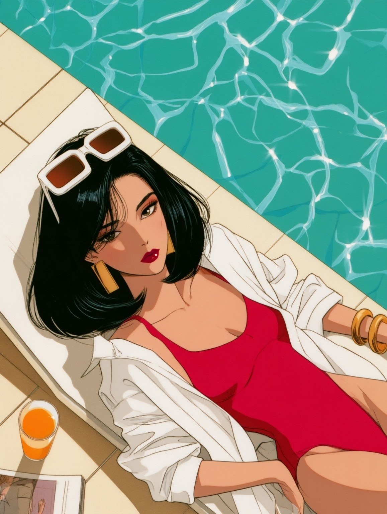
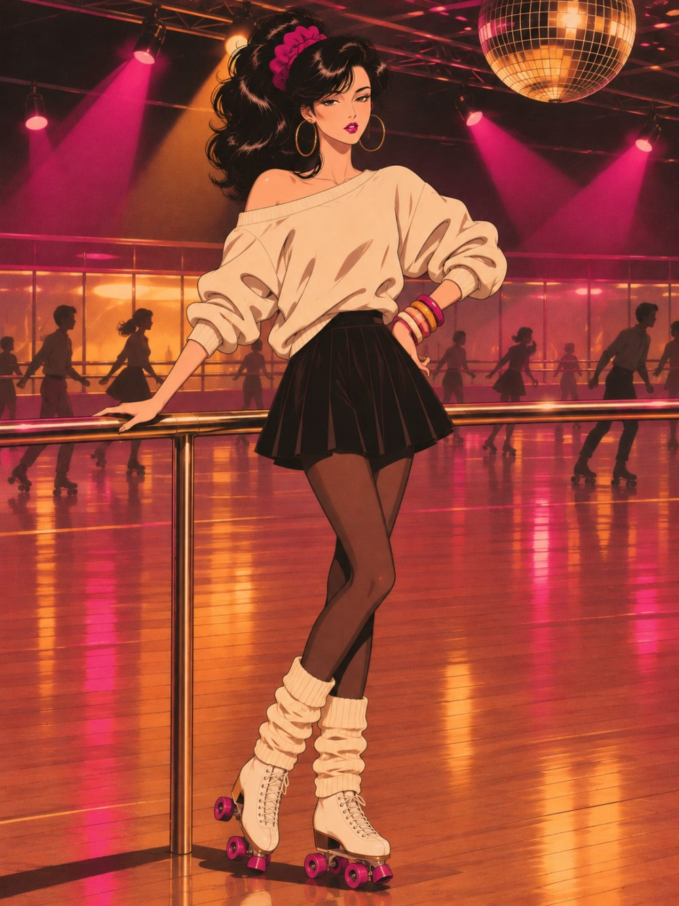
미러볼 아래 한 바퀴
퇴근 뒤의 옷은 낮과 정반대다. 각 잡힌 어깨를 벗고, 한쪽 어깨가 흘러내리는 큼직한 스웨트셔츠를 입는다.
머리는 옆으로 높이 묶어 곱창 밴드로 고정했다. 손목에는 플라스틱 팔찌를 여러 개 겹치고, 스케이트 위로는 두툼한 레그워머를 끌어 올렸다.
- TOP
- 한쪽 어깨로 흘러내리는 크림색 오버사이즈 스웨트셔츠
- SKIRT
- 검은 주름 미니스커트, 검은 타이츠
- HAIR
- 옆으로 높이 묶은 포니테일과 마젠타 곱창 밴드
- LEGS
- 크림색 레그워머, 흰 롤러스케이트
다섯 장면 — 네온 거리에서 우산 하나까지
네온이 번지는 길
비가 오면 간판이 두 배가 된다. 위에 하나, 젖은 길바닥에 하나.
문이 열린 택시와 길에 놓인 우산 하나. 누가 막 내렸거나, 막 타려던 참이다. 길 끝 산 위에는 탑이 서 있다.
- COLOR
- 마젠타, 호박색, 짙은 남색
- ON THE STREET
- 지붕등을 켠 택시, 검은 우산, 김이 오르는 포장마차
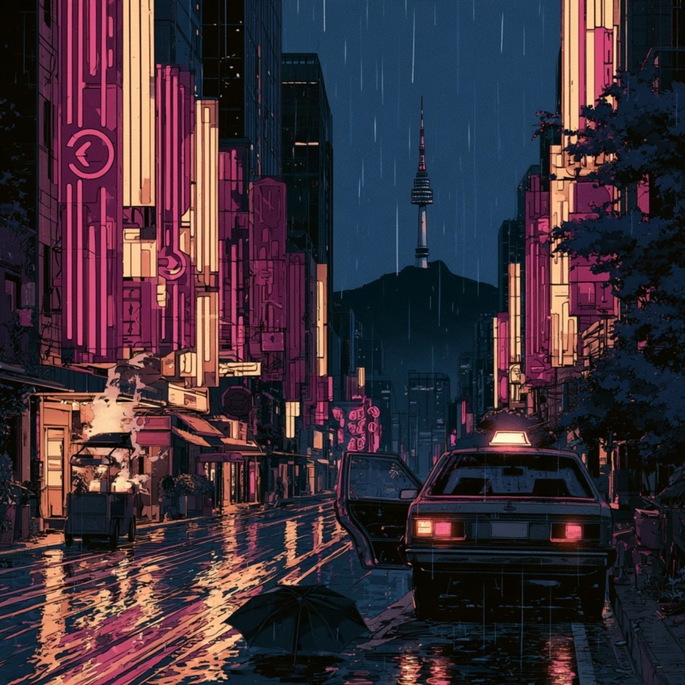
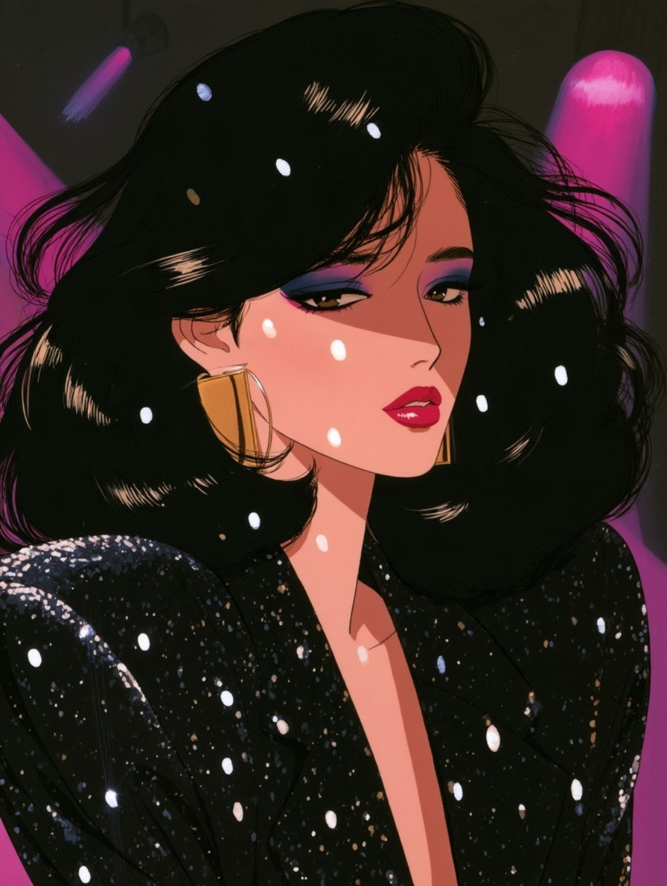
미러볼이 찍는 점
밤의 클럽에서는 조명이 화장을 한 번 더 한다. 미러볼이 돌 때마다 흰 점이 뺨과 머리 위를 지나간다.
눈두덩에는 파랑과 보라를 넓게 펴 바르고 입술은 붉게 채운다. 머리는 한껏 부풀렸다. 재킷은 온통 검은 스팽글이라 조명을 받으면 옷이 먼저 빛난다.
- JACKET
- 넓은 어깨의 검은 스팽글 재킷
- EYES
- 파랑과 보라 아이섀도
- LIPS
- 붉은 립스틱
- EARRINGS
- 큼직한 금 귀걸이
가로등 아래의 가죽
비가 그친 도로는 미등을 길게 비춘다. 가로등 아래 세워 둔 오토바이 위에서 그가 돌아본다. 멀리 언덕 위 타워에 불이 들어와 있다.
검은 가죽 라이더 재킷 안에는 흰 티셔츠 한 장. 바지는 물이 빠진 청바지다. 넘긴 머리에서 몇 가닥이 이마로 내려왔다.
- JACKET
- 검은 가죽 라이더 재킷
- TOP
- 무지 흰 티셔츠
- JEANS
- 물 빠진 청바지
- HAIR
- 뒤로 넘기고 앞머리 몇 가닥
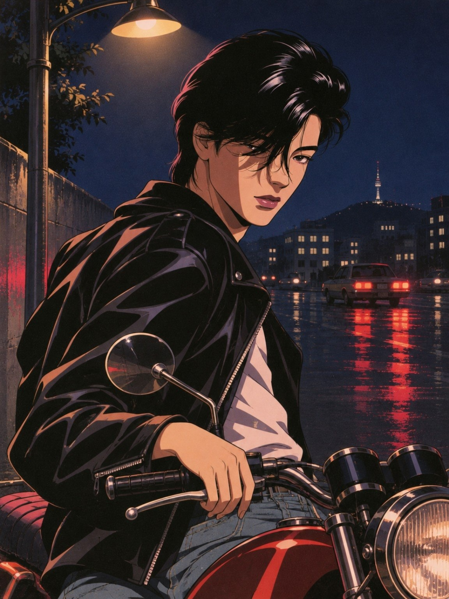
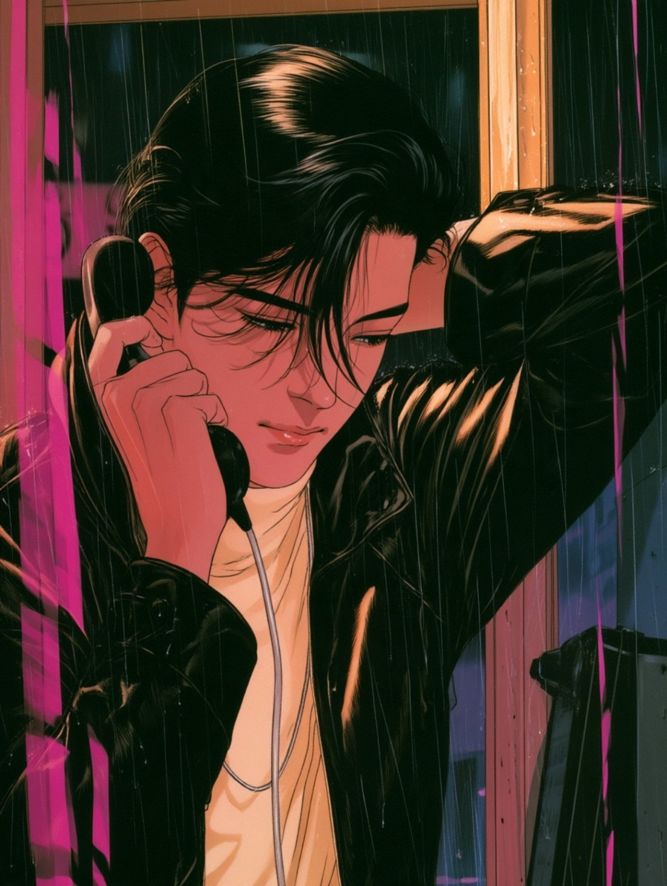
유리 너머의 통화
비를 피해 들어온 공중전화 부스. 유리에 네온이 흘러내리고, 수화기 너머의 목소리에 고개가 숙여진다.
깃을 세운 검은 가죽 블루종은 어깨가 넓다. 안에는 크림색 터틀넥. 비에 젖은 머리는 손으로 쓸어 넘겼다.
- JACKET
- 깃을 세운 와이드 숄더 블랙 가죽 블루종
- KNIT
- 크림색 터틀넥
- HAIR
- 비에 젖어 뒤로 넘긴 머리
우산 하나
우산은 하나, 사람은 둘. 젖은 길에 두 사람과 네온이 함께 비친다.
여자는 허리를 꽉 묶은 크림색 트렌치코트에 검은 스타킹과 펌프스. 머리는 옆으로 묶어 마젠타 곱창 밴드를 했다. 남자는 어깨가 넓은 검은 롱 코트. 두 벌 모두 어깨선이 이 시대의 것이다.
- TRENCH
- 허리를 묶은 와이드 숄더 크림색 트렌치코트
- HAIR · EARRING
- 옆으로 묶은 머리, 마젠타 곱창 밴드, 긴 크리스털 귀걸이
- COAT
- 와이드 숄더 블랙 롱 코트
- SHARED
- 검은 장우산 하나
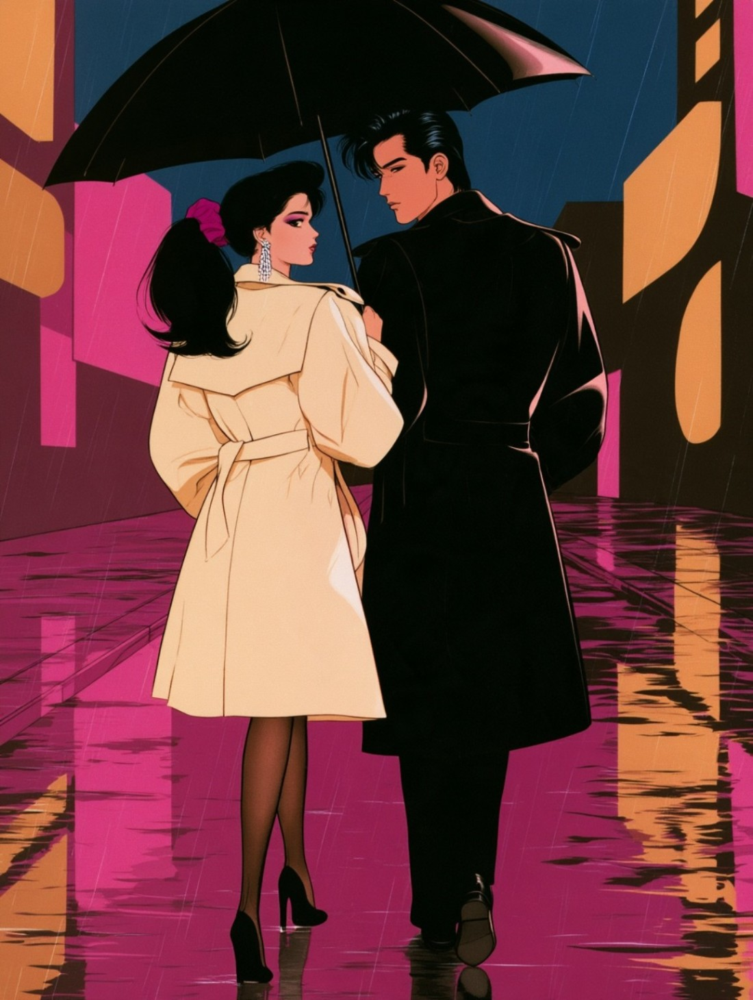
The Wardrobe
- Issue
- No.00 · 본사 특집호
November 1985, Seoul - Locations
- 편집실 · 촬영 스튜디오 분장실 · 택시 뒷좌석 · 여의도 한강변 · 명동 · 가판대 · 레코드 가게 · 롤러스케이트장 · 공중전화 부스 · 다방 · 에어로빅 스튜디오 · 호텔 수영장 · 디스코 클럽
- Advertisement
- 광고 지면의 상품 STEP·7은 실재하지 않는 가상의 상품
- Layout
- 두 쪽을 펼친 잡지 지면. 마젠타 한 색과 굵기 대비가 큰 세리프 제목
- Produced by
- Concept, Styling & Art Direction — KIM SOY
Illustrations — AI 생성 이미지
ÉPOQUE의 시간 여행은 다음 호에 계속됩니다.